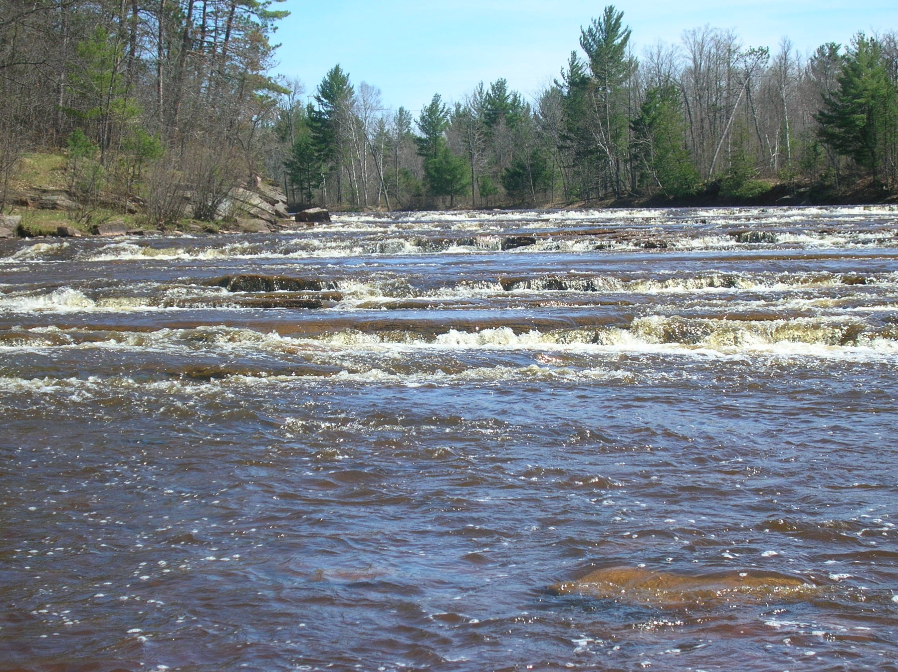

The directory/Bad River Band of Lake Superior Chippewa

Lake sturgeon spawning habitat at the lower falls of the Bad River, 2010U.S. Fish and Wildlife Service; Lake sturgeon spawning habitat at the lower falls of the Bad River, 2010. Public domain — USFWS media record. Source record and photograph license linked.
Named Tribal government · Added to the original list
Bad River Band of Lake Superior Chippewa
Bad River Band of Lake Superior Chippewa is a distinct Ojibwe government on the southern shore of Lake Superior. The Band's public history connects its reservation to the 1854 Treaty of La Pointe and places Odanah near the meeting of the Bad and White Rivers. It describes gardens, seasonal harvesting and the wild rice beds of the Kakagon Sloughs as parts of this particular community's history. That account offers an introduction to relationships among food, water and place, while its broader descriptions of Ojibwe society require further reading across communities. The Mashkiiziibii Natural Resources Department adds a governmental perspective: its mission connects ecosystem protection, technical work, traditional values and the Band's ability to govern natural resources. Together, these pages make a useful starting path from local history to stewardship as an exercise of self-government. They do not establish present harvesting rules, access permissions, ecological outcomes or a complete history. The USFWS photograph shows spawning habitat in the Bad River, an ecosystem in which a federal report documents Band-sponsored lake sturgeon research.
See each region’s evidence for historical or present-day scope.
Homeland / region
Wisconsin, United States — current government listing
Research depth
Source guide
Source collection
3 annotated resources · 2 Indigenous-led
Inspected sources
2 substantive works · selected content reviewed
Initial adequacy
Still unfinished
Source review
October 27, 2026
Names & relationshipsThe state roster identifies this named Tribal Nation separately. It does not establish the full history or relationships of every broader reading label.
A source guide for a deeper dive.This entry provides a brief orientation and an organized reading path. A comprehensive deep dive has not yet been completed. Follow the annotated sources and distinguish primary community accounts from outside reference material.
Still unfinished
A bounded collection of actual selected source bodies supports a useful starting guide for this named government. It remains incomplete and does not imply community endorsement.
Assessment recorded October 27, 2026. This is separate from research completion and community review.
Deepen local chronology through community-authored histories and the underlying treaty and archival records.
Review specific environmental projects and outcomes; mission statements alone do not evaluate them.
Check current Tribal rules and access guidance separately before interpreting any harvesting or land-use activity.
Backdrop photographs & credits
These photographs have individual, documented connections to this entry. Their captions and source records define the people, place, object, and period shown; no one photograph represents every community within a broader label.
Lake sturgeon spawning habitat at the lower falls of the Bad River, 2010 U.S. Fish and Wildlife Service; Lake sturgeon spawning habitat at the lower falls of the Bad River, 2010. Public domain — USFWS media record. Source record and photograph license linked.
The exact USFWS record identifies the lower falls of the Bad River as lake sturgeon spawning habitat. A selected FWS report project body explicitly names Bad River Band as recipient and sponsor of research on Bad River sturgeon nursery/rearing habitat, including the lower river. This supplies a documented ecosystem-work relationship to the exact Band, beyond a place-name association. The photograph is conservation context; the sources do not identify this camera position as a project sampling station or establish ownership, access permission, current conditions or ecological outcomes. Complete available 2288×1712 source frame proportionally resized to 1800×1347 and JPEG recompressed; no pixel crop or retouching. Original source copy retained privately. CSS crops/overlays affect display only.
Image, association, and reuse record reviewed 2026-10-27.
Full photographs are displayed proportionally above. A translucent background copy may be cropped by the viewport; it does not replace the complete image or its record.
The visual treatment does not change the research status, evidence, or remaining gaps recorded in this profile.
Start reading here
Exact named government; broader Ojibwe or Potawatomi histories and related governments remain distinct.
The Band presents its own historical orientation to Odanah, reservation formation and local food landscapes. Broad cultural generalizations and current numerical claims are excluded.
The department explains how its mission joins conservation, traditional values and Tribal self-government. A mission statement establishes priorities, not measured environmental outcomes or current legal advice.
These are selected starting points. The full annotated collection, source perspectives, inspection limits and remaining research questions follow below. A starting guide is not an exhaustive history or community endorsement.
01
Odanah and local food landscapes
The Band's account locates Odanah at the Bad and White Rivers and connects nearby gardens and Kakagon wild rice beds with seasonal community life. These particular places anchor the introduction without making them stand for every Ojibwe community.
The Natural Resources Department describes protecting ecosystem integrity and access to traditional pursuits alongside institutions of Tribal self-governance. Reading its mission is a starting point for examining practical projects and their results.
Deepen local chronology through community-authored histories and the underlying treaty and archival records.
Review specific environmental projects and outcomes; mission statements alone do not evaluate them.
Check current Tribal rules and access guidance separately before interpreting any harvesting or land-use activity.
Selected actual-content works support a bounded starting guide. Earlier source objects retain their original review dates and limits. Reused URLs, images and identity-only checks are not new global historical works. Full history and community review remain open.
Follow the reading path
Sources & further reading
Open any title to read the original source. Annotations explain what each link can help you explore.
No Indigenous-led source is identified in this entry yet. This is a gap in this collection, and does not imply an absence of community knowledge or organization.
Indigenous-ledBad River Band of Lake Superior ChippewaSource 1
The Band presents its own historical orientation to Odanah, reservation formation and local food landscapes. Broad cultural generalizations and current numerical claims are excluded.
Inspection: Content reviewed for the stated scope
Scope: Actual History body lines 7–21 read. Selected local history at lines 7, 14, 16 and 19–21; religious detail, clan lists, name etymology and current figures not adopted.
The department explains how its mission joins conservation, traditional values and Tribal self-government. A mission statement establishes priorities, not measured environmental outcomes or current legal advice.
Inspection: Content reviewed for the stated scope
Scope: Actual mission statement lines 7–16 read. Staff directory, notices, linked codes and newsletters are outside this selected reading scope.
Supporting context explicitly names the Band as recipient and sponsor of Bad River lake sturgeon habitat work. It connects the ecosystem photograph to documented work without proving Tribal ownership of the camera site.
Inspection: Supporting or limited review; see scope
Scope: Actual selected project entry lines 3219–3243, PDF page 121, printed report pages 114–115 read; Band sponsorship and lower-Bad-River habitat work. Other projects and index lists excluded.
Related entries may represent alternate names, constituent communities, wider groupings, or historical connections. Read the naming notes before treating entries as equivalent.
Robey’s Atlas of Indigenous North America · Compiled October 19, 2026 · Bad River Band of Lake Superior Chippewa